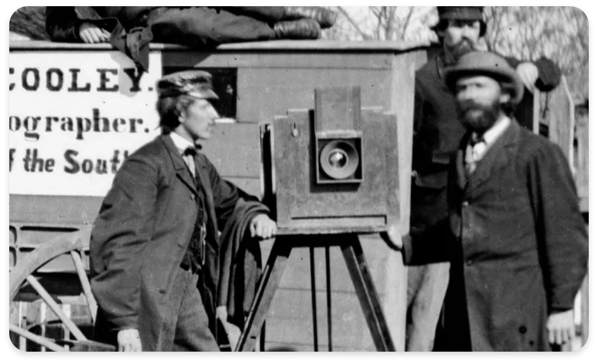
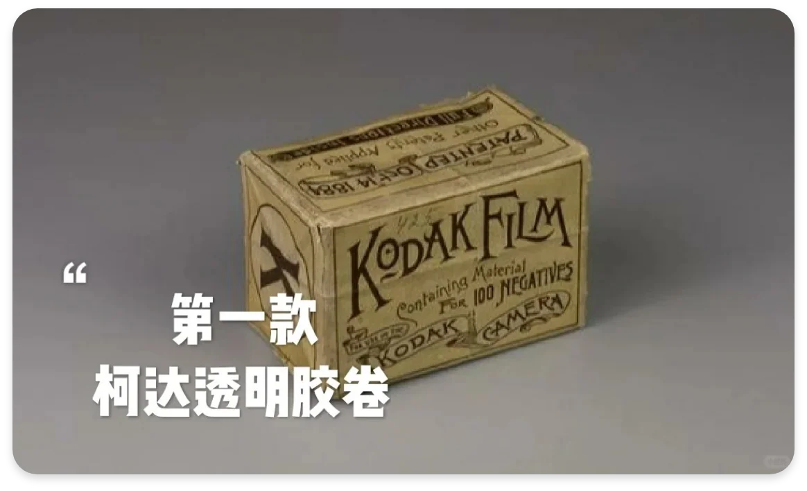
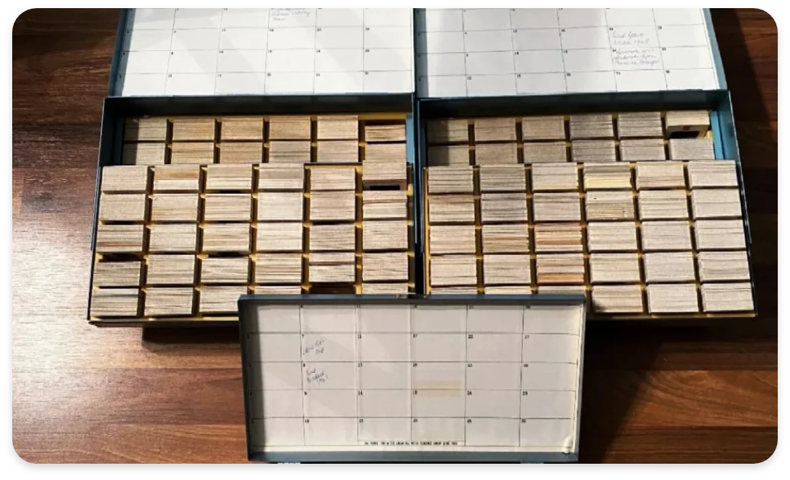
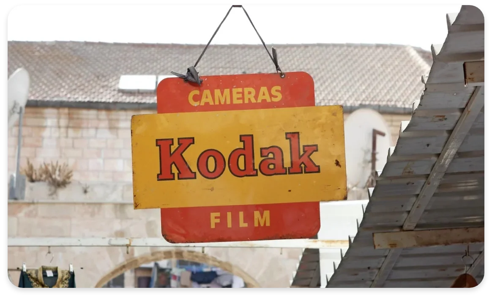
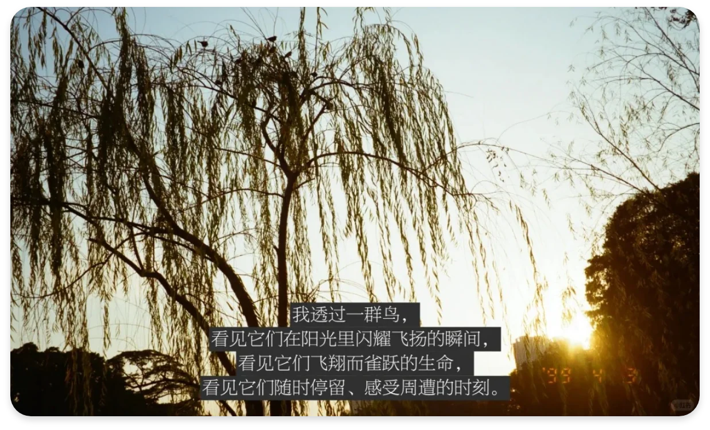

上传作品
上传作品 登录/注册
登录/注册
Tracing back to the
light - shadow
moment in 1826,
the history of film first
glimmers.
1826年，法国发明家约瑟夫·尼埃普斯在锡板照相机上曝光一面亚麻油，经过数小时的曝光后，惊人地获得了人类有史以来第一张照片。
1835年，美国发明家塔尔博特，发明使用涂有氯化银或碘碘银感光的图纸作为成像材料，在照相机里拍成负像，再利用日光印成像，定名为卡罗类型法。
1839年，法国画家路易·达盖尔公布"达盖尔银版摄影法"，以碘化银感光，原理更好，成像速度更快，感光度更高，曝光下降到15至30分钟。

1851年，英国雕塑家兼画家弗雷德里克·斯科特·阿切尔发明湿版摄影法，又称火棉胶玻璃法，以硝化棉感光，成本较低，感光速度提高到约5-15秒。
1861年，物理学家马克斯韦尔用三原色光叠加法拍出世界上第一张彩色照片。
1865年，柯罗打英使干板感光板发出，但阴沉干板感度极低，曝光时间长，应应用较慢。
1871年，英国医生R.L.马多克斯证实使用溴化银明胶代替银碘明胶可行，感光速度大幅提升并生于几个分之一秒。
1877年，麦克斯韦·贝内特发明旋转型乳剂涂布机和机械同步的拍摄机构，可大大提高单帧成像速度，明确实现了帧和时间精密连接速度高达1/125秒。
1881年1月，乔治·伊斯曼成立伊士曼干板公司，实现了感光材料的工业化生产。
1884年，伊士曼相纸上市，使感光技术发展到类似今天传统感光制作的形态。
1885年，乔治·伊士曼开发出第一款涂布在透明基片上的胶片，但自基板仍且不具延展性。
1888年，美国柯达公司生产出新型感光材料——柔软、可卷纳的"胶卷"，并推出柯达相机，广告语"你只需按快门，剩下的我们来做"，推动了摄影的普及。
1889年，第一款涂布在可卷曲和展开的透明基片上的胶片开始在市场上推广。

1900年，柯达公司推出售价1美元的袖珍相机，其使用的胶卷售价0.15美元，摄影成为普通百姓能负担的娱乐。
1930年前后，现代常用的胶片规格逐渐定型，民用及专业摄影胶片有110、120、135等规格，电影胶片有8毫米、16毫米、35毫米等规格。
1935年，柯达推出世界上第一款彩色胶片KODACHROME。
1942年，柯达推出世界上第一款彩色负片KODACOLOR胶片。
1946年，柯达推出E6工艺冲洗的幻灯胶片等系列彩色反转片。
1960年代，摄影技术全面进入彩色时代，彩色相纸和彩色照片冲印店随处可见，大众消费主流从黑白照片转移到彩色照片。

1982年，柯达推出KODACOLOR VR 100胶片，应用了颗粒技术。
1986年，中国研发电影胶片（乐凯集团自制）替代进口胶片，影胶片代替大量胶片市场。
1988年，柯达推出面向新闻摄影记者的Kodak EKTAPRESS GOLD系列及柯达T-MAX P3200胶片。
1994年，柯达推出皇家彩色卷。
1998年，柯达推出面向人像摄影市场的KODAK PROFESSIONAL PORTRA彩色负片。

胶片的文化价值深远而多元。它不仅是摄影历史记忆的物理载体，用细腻的银盐颗粒记录下社会变迁的重大事件与普通人生活的微观瞬间，成为文化生产保存的重要媒介；更是艺术表达的独特语言，以颗粒感、色彩还原和质感营造审美异于数码，抵抗标准化影像审美的审美同质化。
在数字时代，胶片以高成本、低效率的特质承载特殊化创作的文化抵抗，同时作为文化与城市市场的门槛，承载着独特的文化象征。
此外，胶片还渗透为潮流符号的文化符号，从电影工业中的模拟怀旧、到手机软件模拟胶片质感的流行，均推动着人们对实体媒介的文化珍视，成为对抗技术异化、追寻真实感与时间感的重要图腾。
